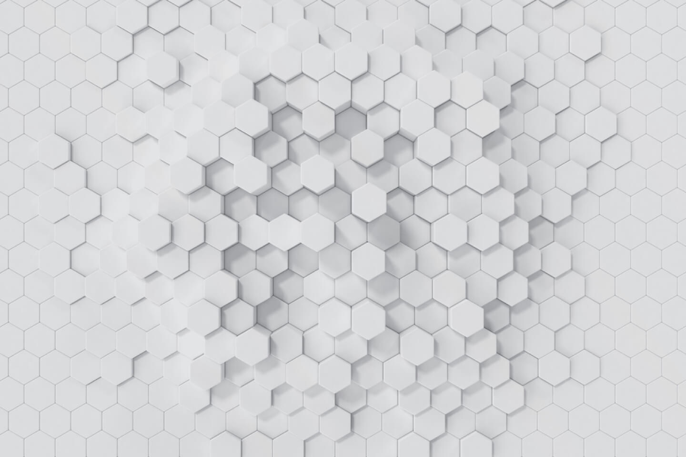

UC16: Projeto Integrador Assistente de Produção 3D
UC12 - Planejar animação - Indicadores
Cria concept de personagem pautado nos fundamentos de desenho.
Desenvolve modelsheet/blueprint utilizando técnica de pintura e ilustração digital.
Produz animação 2D e animatic de acordo com o storyboard.
Mercado

O que você sabe sobre o Mercado de CG?
Pesquisa de 10min sobre o mercado de CG e suas possibilidade.
Possibilidades de Trabalho
Maquetes Digitais para arquitetura
Mercado de móveis
Próteses/Modelos para área da saúde
Animação de vinhetas/logos para vídeos
Animação de Personagens (Filmes/Propagandas)
Impressão 3d
Perfil Profissoonal
Autogestão
Sempre estará alocado em mais de um projeto ao mesmo tempo
Gerencimento do seu tempo em função dos prazos
Gerenciar suas dúvidas e necessidade de ajuda
Prazos são apertados mesmo em empresas grandes
Tipos de Animações
Animação - História
O conceito apareceu primeiramente em 1650 na Lanterna Mágica do inventor veneziano Giovanni Fontana
Uma simples lanterna com uma faixa de animação deslizando por uma lente bruta, iluminada por uma única vela, foi a primeira introdução da humanidade à projeção.
Hoje em dia a melhor forma de conseguir trabalho/emprego na área de CG é através das redes sociais, mostrando o que se sabe fazer e seu potencial.
Pré Produção
Pré Produção
Errar na Pré Produção custa caro!
Duração: 120min
Produção: 2014-2017
Orçamento: US$ 300 milhões
Receita: US$ 657.924.295
Várias alterações feitas pela Warner e saída do Snyder
Era previsto 4h de filme
Muitas críticas após o lançamento
Duração: 242min
2020-2021
Orçamento: US$ 70 milhões
Receita: -
Petição popular com mais de 180.000 assinatura pedindo para ser refeito
Duração: 149min
2015-2018
Orçamento: US$ ~350 milhões
Receita: US$ 2.048.359.754
Começamos pela ideia!
Pode ser simples
Deve ser direcionada
Deve ter uma mensagem clara
Deve ser interessante ao seu público
Ideia: Personagem entra em um torneio de artes marciais para enfrentar seu maior rival.
Direito Autoral
Lei atual: n. 9.610 de 19 de fevereiro de 1998 (LDA)
“... o direito autoral é o poder que o criador de uma obra intelectual tem de impedir que alguém, sem sua prévia autorização, torne público o seu trabalho”
LDA define como autor a pessoa física que criou a obra
direitos de autor e os que lhe são conexos (veiculação, etc...)
Lei n. 12.853 de 2013 – Altera e revoga a LDA no que diz respeito a “gestão coletiva de Direitos Autorais”
Lei n. 10.406 de 2002 – Código Civil
Lei n. 9.609 de 1998 – Lei do Software
Decreto n. 2556 de 1998 – Registro de software
Lei n. 10.695 de 2004 – Lei Carolina Dieckmann
Direito Autoral
As obras intelectuais são aquelas criadas pelo ser humano e expressas ou publicadas por um determinado meio de comunicação a fim de que sejam conhecidas.
Propriedade Intelectual
Propriedade Industrial
Desenho Industrial
Marca
Patentes
Direito Autoral
Direito Autoral
Programa de Computador
Sui Generis
Técnicas de cultivo
O que diz a LDA?
Protegido: texto, conferências, obras dramáticas, obras coreográficas, composições musicais, obras audiovisuais, obras fotográficas, desenhos, pinturas, gravuras, ilustrações, mapas, obras plásticas, projetos, traduções com criação
intelectual nova, programas de computador , coletâneas, enciclopédias, dicionários, dentre outras obras possíveis...
Não Protegido: ideias, procedimentos normativos, sistemas,
métodos, conceitos matemáticos, esquemas,
planos ou regras para realizar atos mentais, jogos
ou negócios, formulários em branco, textos de
tratado ou convenção, leis, decretos,
regulamentos, informações de uso comum:
calendários, agendas ou legendas, nomes e títulos
isolados, aproveitamento industrial ou comercial
das ideias contidas nas obras.
Não é necessária denúncia do autor para haver investigação. 70 anos após a morte do autor domínio público. Pena – detenção de 3 meses a 1 ano, ou multa.
Caso Real
1981, Moacyr Scliar – MAX E OS FELINOS: menino alemão, após naufrágio transatlântico vindo da
Europa para o Brasil, dividia um bote com um jaguar.
2001, Yann Martel – A VIDA DE PI: menino indiano, após naufrágio transatlântico indo da Índia para o
Canada, dividia um bote com um tigre de bengala.
Desdobramentos: outros Direitos Autorais envolvidos por ter se tornado Filme “As aventuras de Pi” e ganhado $$$
Para evitar um processo de plágio, Martel acabou por
reconhecer publicamente a influência de “Max e os
Felinos” e numa nova reedição do seu livro fez um
agradecimento a Scliar “por uma faisca de vida”. Scliar
resolveu não seguir o caminho dos tribunais.
Está sem ideias?
As 36 situações Dramáticas segundo Gozzi-Goethe-Polti, 1934
Implorar
O Salvador
A vingança que persegue o crime
Vingar parente por parente
Acuado
Desastre
Vítima de ...
Tentativa audaciosa
Rapto
O enígma
Conseguir
Ódio de parentes
Rivaliade com parentes
Adultério Mortal
Loucura
Imprudência fatal
Crime de amor involuntário
Matar um parente ignorado
Sacrificar-se pelo ideal
Sacrificar-se pelos parentes
Sacrificar tudo pela paixão
Ter que sacrificar a família
Rivalidade entre desiguais
Adultério
Crimes de amor
Ser informado da desonra do ser amado
Amores proibidos
Amar um inimigo
A ambição
Luta contra Deus
Ciúme equivocado
Erro judiciário
Remorso
Reencontrar
Perder a família
Revolta
Minha Situação dramática escolhida: Rivalidade entre desiguais.
Forças temáticas, segundo Etienne Souriau:
Amor (Sexual, familiar ou de amizade + admiração, responsábilidade moral, salvacão da alma)
Fanatismo (Religioso ou Político)
Cupidez
Avareza
Desejo de riquezas, de luxo, de prazer, de beleza, de honrarias, de autoridade, de satisfações de orgulho
Inveja
Ciúme
Ódio
Desejo de vingança
Curiosidade
Patriotismo
Desejo de realização profissional
Desejo de realização de vocação (religiosa, científica, artística, de viajante, de homem de negócios, de vida militar ou política...)
Necessidade de repouso
Necessidade de paz
Necessidade de asilo
Necessidade de redenção
Necessidade de liberdade
Necessidade de outra Coisa
Necessidade de outro lugar
Necessidade de inocência
Necessidade de virtude
Necessidade de absolvição
Necessidade de esquecimento
Necessidade de exaltação
Necessidade de ação
Necessidade de sentir-se vivo
Necessidade de realizar-se
Medo da Morte
Medo do pecado
Medo do remorso
Medo da dor
Medo da miséria
Medo da feiúra (ambiente)
Medo da doença
Medo do tédio
Medo da perda do amor
Receio da infelicidade dos seres amados, do seu sofrimento ou morte, da sua desonra moral, de seu aviltamento.
é uma ferramenta de trabalho do roteirista para o desenvolvimento (e venda) do roteiro
deve inspirar no leitor os sentimentos, emoções e reviravoltas do roteiro.
narrativo, com discurso direto, e no tempo presente, mantendo os atos do roteiro.
A linguagem do Cinema
Quando os primeiros filmes foram produzidos, tanto os irmãos Lumiére, na França, quanto Thomas Edison, nos Estados Unidos, utilizaram a linguagem cinematográfica mais simples.
Eles colocavam o filme virgem (que ainda não recebeu a imagem) dentro da câmera e, com o auxílio de uma manivela, “rodavam” o filme até ele acabar,
FPS(velocidade) é o ritmo (taxa) em que os quadros serão exibidos de acordo com o meio de transmissão. No cinema é de 24 quadros por segundo.(deve ser superior à 11fps)
TOMADA (TAKE): tudo que é registrado pela câmera desde o momento em que ela é ligada (REC) até o momento em que ela é desligada (PAUSE ou STOP).
PLANO (SHOT): tudo que é mostrado para o espectador de forma contínua, sem interrupção de qualquer tipo.
CENA (SCENE): é um conjunto de planos que acontecem no mesmo lugar e no mesmo momento.
CORTE (CUT): é a passagem instantânea entre dois planos.
SEQUÊNCIA (SEQUENCE): conjunto de cenas que estão interligados pela narrativa. O lugar pode variar, mas a ação tem continuidade lógica.
Escaleta
É um esqueleto do seu roteiro. Usado para dividir e estruturar as cenas.
Curva Dramática
é o crescimento da situação dramática até o cume (clímax), depois ela começa a descer, até voltar à normalidade.
responsável por nos deixar ansiosos ou tensos na poltrona do cinema..
basicamente a variação de intensidade do filme em relação ao seu tempo de narrativa


.jpg)
.webp)